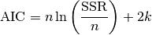
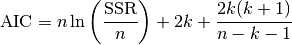
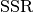
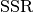

akaike_info_criterion_lsq¶
-
astropy.stats.akaike_info_criterion_lsq(ssr, n_params, n_samples) [edit on github][source]¶ Computes the Akaike Information Criterion assuming that the observations are Gaussian distributed.
In this case, AIC is given as

In case that the sample size is not “large enough”, a correction is applied, i.e.

in which
 is the sample size,
is the sample size,  is the number of free
parameters and  stands for the sum of squared redisuals
between model and data.
is the number of free
parameters and  stands for the sum of squared redisuals
between model and data.This is applicable, for instance, when the parameters of a model are estimated using the least squares statistic.
Parameters: ssr : float
Sum of squared residuals (SSR) between model and data.
n_params : int
Number of free parameters of the model, i.e., the dimension of the parameter space.
n_samples : int
Number of observations.
Returns: aic : float
Akaike Information Criterion.
References
[R20] Akaike Information Criteria <http://avesbiodiv.mncn.csic.es/estadistica/ejemploaic.pdf> [R21] Hu, S. Akaike Information Criterion. <http://www4.ncsu.edu/~shu3/Presentation/AIC.pdf> [R22] Origin Lab. Comparing Two Fitting Functions. <http://www.originlab.com/doc/Origin-Help/PostFit-CompareFitFunc> Examples
This example is based on Astropy Modeling webpage, Compound models section.
>>> import numpy as np >>> from astropy.modeling import models, fitting >>> from astropy.stats.info_theory import akaike_info_criterion_lsq >>> np.random.seed(42) >>> # Generate fake data >>> g1 = models.Gaussian1D(.1, 0, 0.2) # changed this to noise level >>> g2 = models.Gaussian1D(.1, 0.3, 0.2) # and added another Gaussian >>> g3 = models.Gaussian1D(2.5, 0.5, 0.1) >>> x = np.linspace(-1, 1, 200) >>> y = g1(x) + g2(x) + g3(x) + np.random.normal(0., 0.2, x.shape) >>> # Fit with three Gaussians >>> g3_init = (models.Gaussian1D(.1, 0, 0.1) ... + models.Gaussian1D(.1, 0.2, 0.15) ... + models.Gaussian1D(2., .4, 0.1)) >>> fitter = fitting.LevMarLSQFitter() >>> g3_fit = fitter(g3_init, x, y) >>> # Fit with two Gaussians >>> g2_init = (models.Gaussian1D(.1, 0, 0.1) + ... models.Gaussian1D(2, 0.5, 0.1)) >>> g2_fit = fitter(g2_init, x, y) >>> # Fit with only one Gaussian >>> g1_init = models.Gaussian1D(amplitude=2., mean=0.3, stddev=.5) >>> g1_fit = fitter(g1_init, x, y) >>> # Compute the mean squared errors >>> ssr_g3 = np.sum((g3_fit(x) - y)**2.0) >>> ssr_g2 = np.sum((g2_fit(x) - y)**2.0) >>> ssr_g1 = np.sum((g1_fit(x) - y)**2.0) >>> akaike_info_criterion_lsq(ssr_g3, 9, x.shape[0]) -656.32589850659224 >>> akaike_info_criterion_lsq(ssr_g2, 6, x.shape[0]) -662.83834510232043 >>> akaike_info_criterion_lsq(ssr_g1, 3, x.shape[0]) -647.47312032659499
Hence, from the AIC values, we would prefer to choose the model g2_fit. However, we can considerably support the model g3_fit, since the difference in AIC is about 6.5. We should reject the model g1_fit.